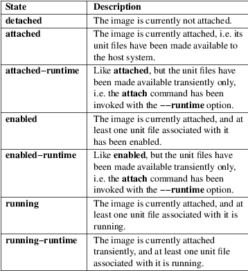
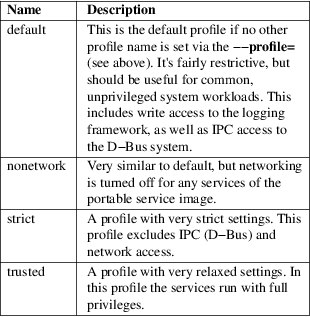

portablectl − Attach, detach or inspect portable service images
|
portablectl [OPTIONS...] {COMMAND} [NAME...] |
portablectl may be used to attach, detach or inspect portable service images. It's primarily a command interfacing with systemd-portabled.service(8).
Portable service images contain an OS file system tree along with systemd(1) unit file information. A service image may be "attached" to the local system. If attached, a set of unit files are copied from the image to the host, and extended with RootDirectory= or RootImage= assignments (in case of service units) pointing to the image file or directory, ensuring the services will run within the file system context of the image.
Portable service images are an efficient way to bundle multiple related services and other units together, and transfer them as a whole between systems. When these images are attached the local system the contained units may run in most ways like regular system−provided units, either with full privileges or inside strict sandboxing, depending on the selected configuration. For more details, see Portable Services Documentation [1] .
Specifically portable service images may be of the following kind:
• Directory trees containing an OS, including the top−level directories /usr/, /etc/, and so on.
• btrfs subvolumes containing OS trees, similar to normal directory trees.
• Binary "raw" disk images containing MBR or GPT partition tables and Linux file system partitions. (These must be regular files, with the .raw suffix.)
The following commands are understood:
list
List available portable service images. This will list all portable service images discovered in the portable image search paths (see below), along with brief metadata and state information. Note that many of the commands below may both operate on images inside and outside of the search paths. This command is hence mostly a convenience option, the commands are generally not restricted to what this list shows.
attach IMAGE [PREFIX...]
Attach a portable service image to the host system. Expects a file system path to a portable service image file or directory as first argument. If the specified path contains no slash character ("/") it is understood as image filename that is searched for in the portable service image search paths (see below). To reference a file in the current working directory prefix the filename with "./" to avoid this search path logic.
When a portable service is attached four operations are executed:
1. All unit files of types .service, .socket, .target, .timer and .path which match the indicated unit file name prefix are copied from the image to the host's /etc/systemd/system.attached/ directory (or /run/systemd/system.attached/ — depending whether −−runtime is specified, see below), which is included in the built−in unit search path of the system service manager.
2. For unit files of type .service a drop−in is added to these copies that adds RootDirectory= or RootImage= settings (see systemd.unit(5) for details), that ensures these services are run within the file system of the originating portable service image.
3. A second drop−in is created: the "profile" drop−in, that may contain additional security settings (and other settings). A number of profiles are available by default but administrators may define their own ones. See below.
4. If the portable service image file is not already in the search path (see below), a symbolic link to it is created in /etc/portables/ or /run/portables/, to make sure it is included in it.
By default all unit files whose names start with a prefix generated from the image's file name are copied out. Specifically, the prefix is determined from the image file name with any suffix such as .raw removed, truncated at the first occurrence of an underscore character ("_"), if there is one. The underscore logic is supposed to be used to versioning so that the an image file foobar_47.11.raw will result in a unit file matching prefix of foobar. This prefix is then compared with all unit files names contained in the image in the usual directories, but only unit file names where the prefix is followed by "−", "." or "@" are considered. Example: if a portable service image file is named foobar_47.11.raw then by default all its unit files with names such as foobar−quux−waldi.service, foobar.service or foobar@.service will be considered. It's possible to override the matching prefix: all strings listed on the command line after the image file name are considered prefixes, overriding the implicit logic where the prefix is derived from the image file name.
By default, after the unit files are attached the service manager's configuration is reloaded, except when −−no−reload is specified (see below). This ensures that the new units made available to the service manager are seen by it.
If −−now and/or −−enable are passed, the portable services are immediately started (blocking operation unless −−no−block is passed) and/or enabled after attaching the image.
detach IMAGE [PREFIX...]
Detaches a portable service image from the host. This undoes the operations executed by the attach command above, and removes the unit file copies, drop−ins and image symlink again. This command expects an image name or path as parameter. Note that if a path is specified only the last component of it (i.e. the file or directory name itself, not the path to it) is used for finding matching unit files. This is a convenience feature to allow all arguments passed as attach also to detach.
If −−now and/or −−enable are passed, the portable services are immediately stopped (blocking operation) and/or disabled before detaching the image. Prefix(es) are also accepted, to be used in case the unit names do not match the image name as described in the attach.
reattach IMAGE [PREFIX...]
Detaches an existing portable service image from the host, and immediately attaches it again. This is useful in case the image was replaced. Running units are not stopped during the process. Partial matching, to allow for different versions in the image name, is allowed: only the part before the first "_" character has to match. If the new image doesn't exist, the existing one will not be detached. The parameters follow the same syntax as the attach command.
If −−now and/or −−enable are passed, the portable services are immediately stopped if removed, started and/or enabled if added, or restarted if updated. Prefixes are also accepted, in the same way as described in the attach case.
inspect IMAGE [PREFIX...]
Extracts various metadata from a portable service image and presents it to the caller. Specifically, the os-release(5) file of the image is retrieved as well as all matching unit files. By default a short summary showing the most relevant metadata in combination with a list of matching unit files is shown (that is the unit files attach would install to the host system). If combined with −−cat (see above), the os−release data and the units files' contents is displayed unprocessed. This command is useful to determine whether an image qualifies as portable service image, and which unit files are included. This command expects the path to the image as parameter, optionally followed by a list of unit file prefixes to consider, similar to the attach command described above.
is−attached IMAGE
Determines whether the specified image is currently attached or not. Unless combined with the −−quiet switch this will show a short state identifier for the image. Specifically:
Table 1. Image attachment states

read−only IMAGE [BOOL]
Marks or (unmarks) a portable service image read−only. Takes an image name, followed by a boolean as arguments. If the boolean is omitted, positive is implied, i.e. the image is marked read−only.
remove IMAGE...
Removes one or more portable service images. Note that this command will only remove the specified image path itself — it refers to a symbolic link then the symbolic link is removed and not the image it points to.
set−limit [IMAGE] BYTES
Sets the maximum size in bytes that a specific portable service image, or all images, may grow up to on disk (disk quota). Takes either one or two parameters. The first, optional parameter refers to a portable service image name. If specified, the size limit of the specified image is changed. If omitted, the overall size limit of the sum of all images stored locally is changed. The final argument specifies the size limit in bytes, possibly suffixed by the usual K, M, G, T units. If the size limit shall be disabled, specify "−" as size.
Note that per−image size limits are only supported on btrfs file systems. Also, depending on BindPaths= settings in the portable service's unit files directories from the host might be visible in the image environment during runtime which are not affected by this setting, as only the image itself is counted against this limit.
The following options are understood:
−q, −−quiet
Suppresses additional informational output while running.
−p PROFILE, −−profile=PROFILE
When attaching an image, select the profile to use. By default the "default" profile is used. For details about profiles, see below.
−−copy=
When attaching an image, select whether to prefer copying or symlinking of files installed into the host system. Takes one of "copy" (to prefer copying of files), "symlink" (to prefer creation of symbolic links) or "auto" for an intermediary mode where security profile drop−ins are symlinked while unit files are copied. Note that this option expresses a preference only, in cases where symbolic links cannot be created — for example when the image operated on is a raw disk image, and hence not directly referentiable from the host file system — copying of files is used unconditionally.
−−runtime
When specified the unit and drop−in files are placed in /run/systemd/system.attached/ instead of /etc/systemd/system.attached/. Images attached with this option set hence remain attached only until the next reboot, while they are normally attached persistently.
−−no−reload
Don't reload the service manager after attaching or detaching a portable service image. Normally the service manager is reloaded to ensure it is aware of added or removed unit files.
−−cat
When inspecting portable service images, show the (unprocessed) contents of the metadata files pulled from the image, instead of brief summaries. Specifically, this will show the os-release(5) and unit file contents of the image.
−−enable
Immediately enable/disable the portable service after attaching/detaching.
−−now
Immediately start/stop/restart the portable service after attaching/before detaching/after upgrading.
−−no−block
Don't block waiting for attach −−now to complete.
−−extension=PATH
Add an additional image PATH as an overlay on top of IMAGE when attaching/detaching. This argument can be specified multiple times, in which case the order in which images are laid down follows the rules specified in systemd.exec(5) for the ExtensionImages= directive and for the systemd-sysext(8) tool. The images must contain an extension−release file with metadata that matches what is defined in the os−release of IMAGE. See: os-release(5). Images can be block images, btrfs subvolumes or directories. For more information on portable services with extensions, see the "Extension Images" paragraph on Portable Services Documentation [1] .
Note that the same extensions have to be specified, in the same order, when attaching and detaching.
−−force
Skip safety checks and attach or detach images (with extensions) without first ensuring that the units are not running, and do not insist that the extension−release.NAME file in the extension image has to match the image filename.
−H, −−host=
Execute the operation remotely. Specify a hostname, or a username and hostname separated by "@", to connect to. The hostname may optionally be suffixed by a port ssh is listening on, separated by ":", and then a container name, separated by "/", which connects directly to a specific container on the specified host. This will use SSH to talk to the remote machine manager instance. Container names may be enumerated with machinectl −H HOST. Put IPv6 addresses in brackets.
−M, −−machine=
Execute operation on a local container. Specify a container name to connect to, optionally prefixed by a user name to connect as and a separating "@" character. If the special string ".host" is used in place of the container name, a connection to the local system is made (which is useful to connect to a specific user's user bus: "−−user −−machine=lennart@.host"). If the "@" syntax is not used, the connection is made as root user. If the "@" syntax is used either the left hand side or the right hand side may be omitted (but not both) in which case the local user name and ".host" are implied.
−−no−pager
Do not pipe output into a pager.
−−no−legend
Do not print the legend, i.e. column headers and the footer with hints.
−−no−ask−password
Do not query the user for authentication for privileged operations.
−h, −−help
Print a short help text and exit.
−−version
Print a short version string and exit.
Portable service images are preferably stored in /var/lib/portables/, but are also searched for in /etc/portables/, /run/systemd/portables/, /usr/local/lib/portables/ and /usr/lib/portables/. It's recommended not to place image files directly in /etc/portables/ or /run/systemd/portables/ (as these are generally not suitable for storing large or non−textual data), but use these directories only for linking images located elsewhere into the image search path.
When a portable service image is attached, matching unit files are copied onto the host into the /etc/systemd/system.attached/ and /run/systemd/system.attached/ directories. When an image is detached, the unit files are removed again from these directories.
When portable service images are attached a "profile" drop−in is linked in, which may be used to enforce additional security (and other) restrictions locally. Four profile drop−ins are defined by default, and shipped in /usr/lib/systemd/portable/profile/. Additional, local profiles may be defined by placing them in /etc/systemd/portable/profile/. The default profiles are:
Table 2. Profiles

For details on these profiles and their effects see their precise definitions, e.g. /usr/lib/systemd/portable/profile/default/service.conf and similar.
On success, 0 is returned, a non−zero failure code otherwise.
$SYSTEMD_LOG_LEVEL
The maximum log level of emitted messages (messages with a higher log level, i.e. less important ones, will be suppressed). Either one of (in order of decreasing importance) emerg, alert, crit, err, warning, notice, info, debug, or an integer in the range 0...7. See syslog(3) for more information.
$SYSTEMD_LOG_COLOR
A boolean. If true, messages written to the tty will be colored according to priority.
This setting is only useful when messages are written directly to the terminal, because journalctl(1) and other tools that display logs will color messages based on the log level on their own.
$SYSTEMD_LOG_TIME
A boolean. If true, console log messages will be prefixed with a timestamp.
This setting is only useful when messages are written directly to the terminal or a file, because journalctl(1) and other tools that display logs will attach timestamps based on the entry metadata on their own.
$SYSTEMD_LOG_LOCATION
A boolean. If true, messages will be prefixed with a filename and line number in the source code where the message originates.
Note that the log location is often attached as metadata to journal entries anyway. Including it directly in the message text can nevertheless be convenient when debugging programs.
$SYSTEMD_LOG_TID
A boolean. If true, messages will be prefixed with the current numerical thread ID (TID).
Note that the this information is attached as metadata to journal entries anyway. Including it directly in the message text can nevertheless be convenient when debugging programs.
$SYSTEMD_LOG_TARGET
The destination for log messages. One of console (log to the attached tty), console−prefixed (log to the attached tty but with prefixes encoding the log level and "facility", see syslog(3), kmsg (log to the kernel circular log buffer), journal (log to the journal), journal−or−kmsg (log to the journal if available, and to kmsg otherwise), auto (determine the appropriate log target automatically, the default), null (disable log output).
$SYSTEMD_PAGER
Pager to use when −−no−pager is not given; overrides $PAGER. If neither $SYSTEMD_PAGER nor $PAGER are set, a set of well−known pager implementations are tried in turn, including less(1) and more(1), until one is found. If no pager implementation is discovered no pager is invoked. Setting this environment variable to an empty string or the value "cat" is equivalent to passing −−no−pager.
Note: if $SYSTEMD_PAGERSECURE is not set, $SYSTEMD_PAGER (as well as $PAGER) will be silently ignored.
$SYSTEMD_LESS
Override the options passed to less (by default "FRSXMK").
Users might want to change two options in particular:
K
This option instructs the pager to exit immediately when Ctrl+C is pressed. To allow less to handle Ctrl+C itself to switch back to the pager command prompt, unset this option.
If the value of $SYSTEMD_LESS does not include "K", and the pager that is invoked is less, Ctrl+C will be ignored by the executable, and needs to be handled by the pager.
X
This option instructs the pager to not send termcap initialization and deinitialization strings to the terminal. It is set by default to allow command output to remain visible in the terminal even after the pager exits. Nevertheless, this prevents some pager functionality from working, in particular paged output cannot be scrolled with the mouse.
See less(1) for more discussion.
$SYSTEMD_LESSCHARSET
Override the charset passed to less (by default "utf−8", if the invoking terminal is determined to be UTF−8 compatible).
$SYSTEMD_PAGERSECURE
Takes a boolean argument. When true, the "secure" mode of the pager is enabled; if false, disabled. If $SYSTEMD_PAGERSECURE is not set at all, secure mode is enabled if the effective UID is not the same as the owner of the login session, see geteuid(2) and sd_pid_get_owner_uid(3). In secure mode, LESSSECURE=1 will be set when invoking the pager, and the pager shall disable commands that open or create new files or start new subprocesses. When $SYSTEMD_PAGERSECURE is not set at all, pagers which are not known to implement secure mode will not be used. (Currently only less(1) implements secure mode.)
Note: when commands are invoked with elevated privileges, for example under sudo(8) or pkexec(1), care must be taken to ensure that unintended interactive features are not enabled. "Secure" mode for the pager may be enabled automatically as describe above. Setting SYSTEMD_PAGERSECURE=0 or not removing it from the inherited environment allows the user to invoke arbitrary commands. Note that if the $SYSTEMD_PAGER or $PAGER variables are to be honoured, $SYSTEMD_PAGERSECURE must be set too. It might be reasonable to completely disable the pager using −−no−pager instead.
$SYSTEMD_COLORS
Takes a boolean argument. When true, systemd and related utilities will use colors in their output, otherwise the output will be monochrome. Additionally, the variable can take one of the following special values: "16", "256" to restrict the use of colors to the base 16 or 256 ANSI colors, respectively. This can be specified to override the automatic decision based on $TERM and what the console is connected to.
$SYSTEMD_URLIFY
The value must be a boolean. Controls whether clickable links should be generated in the output for terminal emulators supporting this. This can be specified to override the decision that systemd makes based on $TERM and other conditions.
systemd(1), systemd-sysext(8), org.freedesktop.portable1(5), systemd-portabled.service(8)
|
1. |
Portable Services Documentation |
https://systemd.io/PORTABLE_SERVICES